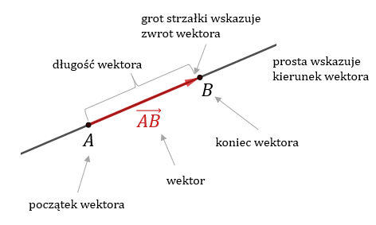
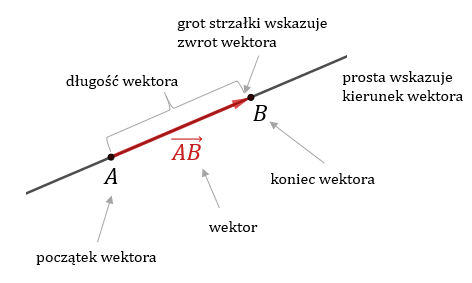
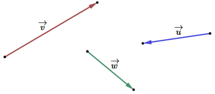
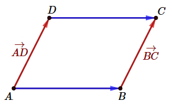
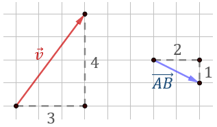
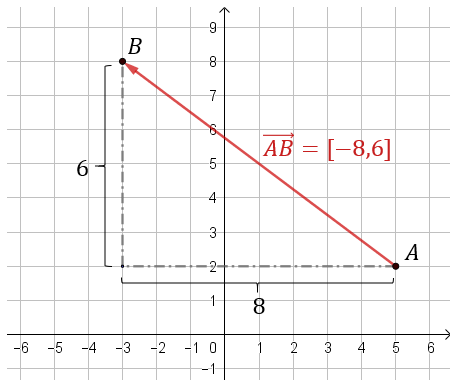
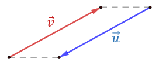
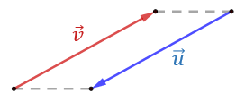
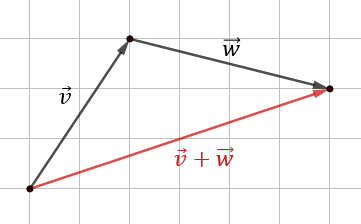

Wektory
1.
Podstawowa wiedza o wektorach
Podstawowa wiedza o wektorach
Wektor - to uporządkowana para punktów (strzałka wyznaczona przez dwa
punkty).


Wektor wyznaczony przez dwa punkty
Wektor ma trzy cechy, które go jednoznacznie wyznaczają:
- długość (czasami inaczej zwana modułem lub wartością)
- kierunek (kierunek prostej zawierającej wektor)
- zwrot (grot strzałki)
Jeżeli znamy punkt w którym wektor ma początek, to taki wektor nazywamy wektorem
zaczepionym.
Wektor zaczepiony w punkcie \(A\) i o końcu w punkcie \(B\) zapiszemy tak: \(\overrightarrow{AB} \).
Wektor zaczepiony w punkcie \(A\) i o końcu w punkcie \(B\) zapiszemy tak: \(\overrightarrow{AB} \).
Jeżeli wektor może być opisany tylko przez długość, kierunek i zwrot. Wtedy taki
wektor nazywamy wektorem swobodnym i oznaczamy najczęściej małymi literami, np. tak:
\(\overrightarrow{v} \), \(\overrightarrow{u}\), \(\overrightarrow{w}\). 
Wektory swobodne
Pojęcia: wektor zaczepiony oraz wektorem swobodnym są w praktyce
rzadko stosowane. Najczęściej oba rodzaje wektorów określa się krótko pojęciem: wektor.
W równoległoboku \(ABCD\) wektory zaczepione \(\vec{AD}\) i \(\vec{BC}\)
wyznaczają ten sam wektor swobodny: 
Zauważmy, że kolejność punktów ma znaczenie. Wektor \(\vec{CD}\) ma przeciwny zwrot do wektora \(\vec{DC}\).
Zatem wektory \(\vec{AB}\) i \(\vec{CD}\) nie wyznaczają tego samego wektora swobodnego.
Wektory w równoległoboku
Podobnie wektory \(\vec{AB}\) i \(\vec{DC}\)
wyznaczają ten sam wektor swobodny.Zauważmy, że kolejność punktów ma znaczenie. Wektor \(\vec{CD}\) ma przeciwny zwrot do wektora \(\vec{DC}\).
Zatem wektory \(\vec{AB}\) i \(\vec{CD}\) nie wyznaczają tego samego wektora swobodnego.
Współrzędne wektora zapisujemy w nawiasach kwadratowych, np.:
\[\vec{v}=[3, 4]\qquad \vec{AB}=[2,-1]\] Pierwsza współrzędna oznacza przesunięcie wzdłuż osi
\(Ox\), a druga wzdłuż osi \(Oy\).
Narysujmy wektory: \(\vec{v}=[3, 4]\) oraz \(\vec{AB}=[2, -1]\): 
Współrzędne wektorów
Współrzędna \(y\)-owa wektora \(\vec{AB}\) jest
ujemna i dlatego przesuwamy się w dół. Na rysunku pionowe przesunięcie zostało podpisane dodatnią
liczbą \(1\), ponieważ długość odcinka jest zawsze dodatnia.
Jeżeli mamy \(A=(x_1,y_1)\) oraz \(B=(x_2,y_2)\) to:
\[\vec{AB}=[x_2-x_1,y_2-y_1]\]
Długość wektora o danych współrzędnych \(\vec{AB}=[x,y]\) obliczamy ze
wzoru: \[|\vec{AB}|=\sqrt{x^2+y^2}\]
Oblicz współrzędne wektora o początku w punkcie \(A=(5,2)\) i końcu w punkcie
\(B=(-3, 8)\). Oblicz długość wektora \(\vec{AB}\).
Najpierw liczymy współrzędne
wektora: \[\vec{AB}=[-3-5,8-2]=[-8,6]\] 
Wektor w układzie współrzędnych
Teraz możemy obliczyć jego
długość: \[|\vec{AB}|=\sqrt{(-8)^2+6^2}=\sqrt{64+36}=\sqrt{100}=10\]
Wektor przeciwny - to taki, który ma współrzędne przeciwnych
znaków.
Jeżeli wektory \(\vec{v}\) i \(\vec{u}\) są przeciwne, to mają tą samą długość i kierunek, ale przeciwne zwroty. 
Jeżeli wektory \(\vec{v}\) i \(\vec{u}\) są przeciwne, to mają tą samą długość i kierunek, ale przeciwne zwroty. 
Wektory przeciwne
Znajdź wektor przeciwny \(\vec{u}\) do wektora:
\(\vec{v}=[5,11]\)
\(\vec{v}=[-4,0]\)
\(\vec{v}=\left[-\frac{1}{2},3\right]\)
\(\vec{u}=-\vec{v}=[-5,-11]\)
\(\vec{u}=-\vec{v}=[4,0]\)
\(\vec{u}=-\vec{v}=\left[\frac{1}{2},-3\right]\)
Dodawanie wektorów wykonujemy dodając ich współrzędne.
Wykonaj dodawanie wektorów \(\vec{v}=[2,3]\) i \(\vec{w}=[4,-1]\)
\[\vec{v}+\vec{w}=[2,3]+[4,-1]=[2+4,3+(-1)]=[6,2]\] 
Dodawanie wektorów - interpretacja graficzna
Odejmowanie wektorów wykonujemy odejmując ich współrzędne.
Wykonaj odejmowanie wektorów \(\vec{v}=[2,3]\) i \(\vec{w}=[4,-1]\)
\[\vec{v}-\vec{w}=[2,3]-[4,-1]=[2-4,3-(-1)]=[-2,4]\] 
Odejmowanie wektorów - interpretacja graficzna